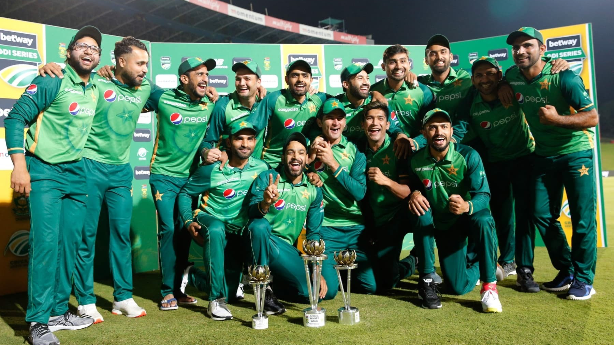

The Pakistan Cricket Board manages the Pakistan national cricket team, also known as the Shaheens, Green Shirts, Men in Green, and Cornered Tigers.
Babar Azam is the captain.
International Cricket Council is the name of the league.
Last One-Day International: 13 July 2021 at Edgbaston, Birmingham, against England.
The first One-Day International was played against New Zealand at Lancaster Park in Christchurch on February 11, 1973.
First Test: 16–18 October 1952, at the Feroz Shah Kotla Ground in Delhi, against India.
Misbah-ul-Haq (Head coach), Waqar Younis (Bowling coach), and Grant Bradburn are the coaches (Fielding coach)
